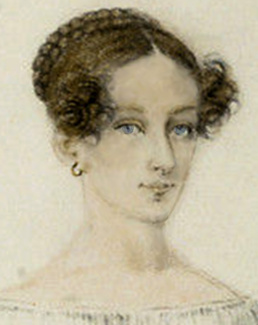

Frankenstein
Mary Shelley
Book Club November 3, 2024
Frankenstein is of course one of the most famous and influential novels ever written. Yet it remains drastically misunderstood. In the original era of its being this was due largely to neglect of its actual text in favor of the stage adaptations and bowdlerized retellings which swamped the novel itself in popular imagination in the wake of its sudden fame and notoriety. In our own time it is the intense scholarly scrutiny the work has come under that makes it possible to make endless accurate observations without any urgency about coming to the actual point.

It is often the case, indeed expected, that the full meaning and significance of the greatest novels only come clear with the passage of time and the perspective that develops with it. But with Frankenstein the movement has been in the opposite direction. The urgency of Shelley’s intentions has been obscured by an ongoing flow of admixture with contemporary obsessions. But any enduring significance of the novel must in the final analysis be grounded in the fact that it was fashioned for and exquisitely attuned to its own time, even to the author’s own household and the private and public dramas therein enacted. And as it mutates its way down the centuries through popular culture it seems, that for all the attention it has attracted, only its earliest readers had the privilege of opportunity to see it plain, to endure its full execration, and if they could bear to see it through, to perceive the quantum of benediction that only full and merciless clarity can deliver.
The Original Reader’s State of Mind
The first thing likely to have aroused the attention of a reader of the original publication is that it was dedicated to William Godwin (Mary Shelley’s father, although the reader would not have known that since the novel was published anonymously). Godwin was a notorious public figure of the previous generation, that of Europeans who came of age during the French Revolution and the Napoleonic wars that followed. He was a well-known philosopher and novelist, mild-mannered but with a possibly autistic capacity for extreme concentration, which led him to follow the consequences of his ideas to the limit heedless of personal cost. Namely, he asserted that reason was the only acceptable basis for personal and political decision-making.
Raised in an extended family dominated by clergymen, he quickly deduced that God does not exist and thus cut himself off from his expected career. He became a journalist and novelist. The start of the French Revolution when he was in his early thirties had a profound effect on him, as it did for many people his age. The Revolution threw Europe into years of turmoil, not just militarily and politically, but philosophically and culturally as well. Suddenly, as in the 1960s, all aspects of life were up for discussion and negotiation, from the largest social and government institutions like the church and the monarchy, to the most intimate personal and sexual relationships.
Everyday debates penetrated beyond the fears and apprehensions of the day to the deepest existential levels. Why does tyranny exist? Why are most people poor and miserable? Why is it so hard to bring about improvements? What prompts a body politic to tip over into revolution? Godwin responded to the times by writing a lengthy philosophical treatise laying out his argument that reason is the only sound foundation for a just society, and social ills are the inevitable consequence of the blindness that comes with irrationality. He followed that argument to the natural conclusion that institutions of hereditary power, like the monarchy and the church, were illegitimate.
To publish this work when Britain’s Establishment felt itself under mortal threat (with daily fears of invasion and insurrection) was an act of great courage, and it made him famous. He became a hero to liberals in England and Europe. But he also earned the enmity of the Establishment. No official action was taken against him, but the government made it quietly known that he was anathematized. The mainstream press accordingly portrayed him as a fool with book learning but no sense, and a depraved degenerate for his atheism and opposition to marriage. His writings largely stopped selling and he struggled to earn a living, relying heavily on loans from still-loyal supporters.
Early readers who were paying attention saw Frankenstein as something of a pastiche of Godwin’s philosophical writing and his novels (which he wrote to dramatize his ideas and bring them to larger audiences), with the added effrontery to God of a revived corpse – seemingly a natural extension of Godwin’s heretic influence on the young.
But an open-minded reader familiar with Godwin’s writing might have noticed an ironic dimension to the Frankenstein author’s tribute. Frankenstein was strongly influenced by Godwin’s biggest-selling novel – called Things As They Are, it is about a man falsely accused of murder by his wealthy employer who is the actual culprit. The authorities will not believe the man’s testimony over his employer’s, or consider his evidence, and he is chased by agents of the law across England, witnessing the petty tyrannies and injustices of everyday life endured by the powerless and disenfranchised. The novel ends with a climactic confrontation in court between master and servant, where the master finally admits guilt and the two reconcile, each confessing the pain that the severing of their relationship had caused; the master dies soon afterward.
Frankenstein of course features murder, pursuit, injustice and class conflict. But notably there is no final confrontation, except of corpse with corpse. The denouement is unremittingly bleak and flat, and there is no clear resolution of the conflict of opposing forces on the surface narrative level of the text.
As such, the ending of Frankenstein hints at an ironic break with the older author, an implicit rebuke: there are no easy reconciliations or facile answers, justice is elusive, and the truth is visible only when pretensions are stripped bare and one is pushed against one’s will and even one’s reason to the limit of endurance. The early reader might have perceived the author’s message to Godwin, behind the tributes, to be ‘you did not go far enough.’
Mary Shelley’s State of Mind
Frankenstein incorporates influences and references that would have been evident to the alert reader at the time of its publication. But Shelley includes clues and allusions whose significance could only have been known or suspected by a tiny inner circle of family and acquaintances. This suggests that in important ways the work was directed squarely at her father and was primarily or largely an attempt to communicate with him; more to the point, an effort to show him how his diagnosis of the ills of society as laid bare by the French Revolution – and his advocacy of pure reason as the panacea – fell short, using the dynamics of his own household as illustration.
Godwin was a revolutionary but not a firebrand. He was mild-mannered, socially awkward and often emotionally withdrawn. Nevertheless, he bitterly resented his fall from fame and reduction of influence in current affairs under the government’s soft ban on him, enforced for over a decade by the time Mary was a teenager. He loved Mary and recognized her special potential among his children, and so gave her a first-rate education – but undergirding this effort was a hope that she would use her talents to serve him as his biographer and archivist, thus rescuing his reputation for posterity after his death.
He was little comfort to Mary when her infant first child died. He suggested she use reason to rationalize the experience and get past it. He was conversely delighted when she legitimized her relationship with Percy Shelley by marrying him, despite Godwin’s well-known opposition to marriage on philosophical grounds – perhaps thinking that having as son-in-law the son and heir of a wealthy baronet would put a return to respectable society within reach.
All this is to say that Godwin had a big ego, big enough to equate his personal interests sometimes with the interests of his mission to advance social justice for the good of all. And the operation and maintenance of his ego sometimes did damage to the people he shared his life with.
Godwin was an avid book collector. He was said to have one of the best private libraries in England. He was an innovator in the performance of active comparative research to inform his writing, and put his collection to that use as well as for the education of his children. One of his favorite topics to collect was works of gnostic and esoteric philosophy and religion, of just the kind that captured teenage Victor Frankenstein’s fascination.
But Godwin did not share Victor’s motivation for this interest. He acquired works on the topic to use them as fodder for ridicule in his own work. ‘Look at what people who have departed from reason would have you believe,’ was his message. ‘Look at these fanciful notions, these silly superstitions! They’re absurd!’
Mary was intimately familiar with her father’s work and the contents of his library, and must have seen how the latter informed the former. But she did not take her father’s dismissals of gnostic philosophy at face value. Rather, it was her extraordinary insight that gnostic philosophy, lurking in the background of civilization from the beginning, was a symptom of a malady, a malady from which her own father suffered. And it was the malady of Godwin’s ego that ironically drove him to turn on gnosticism, to denigrate and deprecate it in favor of his own philosophy.
For the motivation at the heart of the work of the gnostics was to salve and prop up ego, ultimately to forge and wield ego as a shield against existential terror inflamed by humanity’s stranding in an infinite and unfathomable universe. Mary’s depiction of gnostic writings as Frankenstein’s motivator could hardly be anything but a subtle lampooning of Godwin, a perceptive casting of his abreaction to them as the rage of Caliban seeing his own face in a glass, as it were.
Godwin had let himself be taken over by the kind of ego which gnostic philosophy was designed to build and bolster. To the world he taught that tyranny infiltrates osmotically from corrupt social frameworks into personal relationships.1 In Frankenstein Mary depicted the dynamic operating in reverse, that the seed of tyranny grows from individual terror, which produces the defense mechanism of pathological ego, the toxic effects of which are exported to the world.
Mary grew up surrounded by exceptional egos – through her childhood her father was still in social contact with many leading literary and political figures and often had them as guests at his house. She fell in love with and married another exemplar, Percy Shelley, and socialized extensively with Lord Byron. Her sharp perception must have brought familiarity with how such egos operate, and how it would be pointless, counterproductive, to confront and critique them directly – indeed such confrontation would be evidence of toxic assertion of one’s own ego.
But her intellect and will enabled her to formulate an oblique strategy. She took her father on at his own game and wrote a novel. She could be sure he would read it closely, out of both fatherly pride and anxiety over what impact it might have on his own reputation; as well as morbid concern over whether her literary gifts might threaten to overshadow his. He could not have failed to observe that the book was filled not only with references to his published work but also allusions to intimate details of his home life. But she avoided a direct clash; she constructed her prose so that he was free to allow his ego to ignore the special ironic indictments laid out just for him and take it just for what it appeared to be, a popular entertainment.
Then as now, the novel quietly offers up an arc light of insight, but hides it within a labyrinthine story in which a reader’s ego is likely to become disoriented and lost. The original intended reader was free to ignore the lamp of interrogation and indictment (as is the modern one). But if the novel has accrued any benefit from the passage of time and the occlusion of its original purpose, it is in the static charge gathering from the friction of that turning away. Perhaps in the modern day the terror of impending of explosive discharge will overwhelm the fears the pathological ego was designed to guard against. But not yet.
Frankenstein’s State of Mind
Victor Frankenstein is an ironic character in the classical sense. That is, he is a fool who is unaware of the true dynamics of events around him, and is unaware of how his own statements reveal his folly. Nothing he says can be taken at face value. His statements must be evaluated in the context of the entire text, and with the milieu in which it was written borne in mind.
Frankenstein described his upbringing thus:
care and pain seemed for ever banished. My father directed our studies, and my
mother partook of our enjoyments. Neither of us possessed the slightest
pre-eminence over the other; the voice of command was never heard amongst us;
but mutual affection engaged us all to comply with and obey the slightest
desire of each other.
Yet literally one paragraph before this passage, he says of his middle brother Ernest:
He had been afflicted with ill health from his infancy, through which Elizabeth
and I had been his constant nurses: his disposition was gentle, but he was
incapable of any severe application.
Later when Victor is preparing for college he says of his friend Henry, who was so close he practically grew up in the Frankenstein household:
He bitterly lamented that he was unable to accompany me: but his father could
not be persuaded to part with him, intending that he should become a partner
with him in business, in compliance with his favourite theory, that learning
was superfluous in the commerce of ordinary life. Henry had a refined mind; he
had no desire to be idle, and was well pleased to become his father’s partner,
but he believed that a man might be a very good trader, and yet possess a
cultivated understanding.
Victor also related how his father and mother came to be married:
One of [Frankenstein senior’s] most intimate friends was a merchant, who, from
a flourishing state, fell, through numerous mischances, into poverty. This man,
whose name was Beaufort, was of a proud and unbending disposition, and could
not bear to live in poverty and oblivion in the same country where he had
formerly been distinguished for his rank and magnificence.
Beaufort died of grief over his fall in fortune, leaving his daughter Caroline destitute:
her father died in her arms, leaving her an orphan and a beggar. This last blow
overcame her; and she knelt by Beaufort’s coffin, weeping bitterly, when my
father entered the chamber. He came like a protecting spirit to the poor girl,
who committed herself to his care
Frankenstein senior, old enough to be her father, married Caroline, and later commissioned a portrait to be set on the mantelpiece of their house:
It was an historical subject, painted at my father’s desire, and represented
Caroline Beaufort in an agony of despair, kneeling by the coffin of her dead
father… a daily reminder of the disparity of their status and fortunes at the time
they wed.
Young Victor’s own testimony shows that the banishment of care and pain, the absence of “the slightest pre-eminence over the other” existed only in his imaginings. His upbringing was beset by disparities of class, wealth, education, gender role and health. He shows a kind of doublethink; he was capable of articulating the sufferings and humiliations of those in his circle, but he has elided them from his fantasy picture of home life.
He says when he was young:
I felt as if I were destined for some great enterprise. My feelings are
profound; but I possessed a coolness of judgment that fitted me for illustrious
achievements. This sentiment of the worth of my nature supported me, when
others would have been oppressed; for I deemed it criminal to throw away in
useless grief those talents that might be useful to my fellow-creatures… But
this feeling, which supported me in the commencement of my career, now serves
only to plunge me lower in the dust… I trod heaven in my thoughts, now
exulting in my powers, now burning with the idea of their effects. From my infancy I was
imbued with high hopes and a lofty ambition; but how am I sunk! Oh! my friend,
if you had known me as I once was, you would not recognize me in this state of
degradation. Despondency rarely visited my heart; a high destiny seemed to bear
me on, until I fell, never, never again to rise.
When Victor was at the top of his social order, all his ego permitted him to acknowledge was a placid, perfect harmony among his companions and robust self-worth. But when adversity appeared and reality broke in to menace his self-image, Victor’s obsession with class and its comforts revealed itself, and his secret terrors came forth – terror of the possibility of disruption of life’s hierarchies (the psychic trauma of which killed old Beaufort), terror that existence may have nothing for him to assure that he is special, that he can command history, that his identity is immortal.2
These secret terrors are why he fell for the authors of gnostic and esoteric religion and philosophy as a teen. Since literally the beginning of civilization every member of the ruling class has been taught that there is a natural order to existence, set in place by a supreme being, and every person, high and low, is put in the place they need to be to serve the functions that keep society healthy and harmonious, and thus every life is meaningful. In this view it was simply Victor’s fortune that he was born near the top, destined to rule and reinforce a just system with his talents and good deeds.
But when Victor reached the stage of maturation where healthy adult identity formation can begin, he also acquired the capacity for doubt. He had the choice, like everybody does, to embrace doubt and thus become fully human. But anxiety over loss of privilege and identity got the better of him.
Gnostic philosophy teaches that the natural order can be validated and affirmed by study and meditation, and the supreme being can be perceived directly by an alert and prepared mind.
And so the books of philosophy Victor read promised just the assuaging of doubt he was seeking: that there is a provable purpose, meaning and structure in the world, that there is a hierarchy of merit and value put in place and maintained by a supreme being, that there will be retribution for those who seek to disrupt the hierarchy, and protection and restoration for those threatened with dislodgement from it.
Absence of such assurances leaves one open to the threat of the primal terror, that of exposure to the abyss, of the fear there are no boundaries between the individual and the material world, and thus that individual identity is an illusion and can dissolve. Gnostic teachings, indeed all of the rituals of civilization-building into which those teachings are interwoven, are coping mechanisms, techniques for growing artificial ego structures that suppress that terror out of consciousness.
But no amount of scholarly reassurance could exorcise Victor’s terror completely. He became disenchanted with his gnostic authors when he witnessed a tree destroyed by a bolt of lightning. But it is not the case, as is usually explained by commentators, that he at this point left gnostic thinking behind and was converted to the intellectual discipline of science.
Rather, the scene of the tree’s destruction was a tableau of his worst fears. It was an old and beautiful oak, strong, serene, an ancient and majestic feature of the landscape of his father’s estate – emblematic of the stability of his family line and his place in the world, and thus of the approbation of the supreme being. But a bolt of electricity blew it out of existence in literally the blink of an eye.
Victor’s eventual choice of science over his gnostic scholars came not because they had no explanation for what lightning is and were thus delegitimized, but because science provided the only lifeline for him to rationalize the destructive power of natural forces and incorporate them meaningfully into his world view. He spliced gnostic goals with scientific methods, thus constructing a new framework which would enable him to resume pursuit of validation of his worth in the face of evidence that the world is chaotic and contingent. His conversion was just a change of tactics.
It was Victor’s intention to prove the ultimate validity of the gnostics’ vision of a universe with meaning, purpose and a destiny (and demonstrate his privileged place as a favorite of the supreme being near the top of the hierarchy of merit) by taming the forces of nature and marshalling them to bring the dead to life using the up-to-date tools of science, thus revealing the power behind the power.
He said: “Life and death appeared to me ideal3 bounds, which I should first break through, and pour a torrent of light into our dark world.” This is the gnostic vision, which teaches that the universe is all light, except our material plane, which is an illusion of shadows where the appearance of death is a mirage. The intent of gnostic teaching is to allow the individual to break through to the light and dispel the illusion.
He said: “A new species would bless me as its creator and source; many happy and excellent natures would owe their being to me. No father could claim the gratitude of his child so completely as I should deserve their’s.” This is an allusion to the gnostic demiurge, who created the material world and a hierarchy of powers to run it, from stars to planets and so on to men, for the purpose of receiving worship and to bolster his false belief in his own transcendent worth.
When the monster awoke, Victor expected its mind to be uncorrupted and to receive from it some form of acknowledgement or Ave from the supreme being, and to hear its truths spoken.4 When the monster turned out to be mute, apparently idiotic, and obviously a shambling assembly of corrupt and hideous parts rather than a sublime whole, Victor was confronted face-to-face at last with his worst misgiving, that instead of proving his theories he had disproven them: that he had no special status, that the universe was as mindless as the monster, existence a product of blind impersonal forces, meaningless.
This is why Victor ran immediately from the animated monster, despite it being a great scientific breakthrough, the brilliant culmination of over a year of labor. And it’s why he went to sleep and dreamed as he did. His vision of his beautiful cousin Elizabeth morphs into horror:
as I imprinted the first kiss on her lips, they became livid with the hue of
death; her features appeared to change, and I thought that I held the corpse of
my dead mother in my arms; a shroud enveloped her form, and I saw the
grave-worms crawling in the folds of the flannel.
Why and in what form is his mother here? Does he have an Oedipal complex? No, the mother of his vision is not the one who raised him, the aged mother who died of scarlet fever. Fine society ladies were not buried in flannel shrouds. Flannel was the cheapest material available: in nineteenth-century England, “buried in a flannel shroud” was a euphemism for “died a pauper.” The mother he dreamed was the one from the portrait in his house, hung over the mantel so he saw it every day growing up, showing her fallen from the heights of Geneva society to “an agony of despair.” Victor’s father put up the portrait as a constant reminder to his wife of her place, but it haunted Victor and planted the seed of fear that perhaps God doesn’t care or doesn’t exist.5
The ego injury Victor suffered as a result of not getting the validation he expected drives his behavior through the rest of the novel. He expresses denial, rage, depression, obsession with revenge, even unto death. He had a choice; by the time he’d been informed of the death of his brother William, he’d seen examples of redeeming, life-giving care – “unbounded and unremitting attentions” – his mother’s toward Elizabeth and Justine, Henry’s toward him. Even his father seemed moved and softened, for even in the face of his youngest son’s murder, he counseled Victor:
not brooding thoughts of vengeance against the assassin, but with feelings of
peace and gentleness, that will heal, instead of festering the wounds of our
minds. Enter the house of mourning, my friend, but with kindness and affection
for those who love you, and not with hatred for your enemies.
Gentleness and kindness might have made all the difference with the monster. Victor had the examples and the advice. But such a choice was unbearable to his ego.
“All Men Hate the Wretched”
The aim of historian David Hacker Fischer’s book Albion’s Seed is to show how different colonist groups, who came from England to America in separate waves to different regions, critically shaped the present-day culture, politics and economics of those regions primarily through their cultural practices (“folkways”) rather than by political or economic activities.
The Mid-Atlantic plantation-dominated colonies were settled by members of the aristocratic landowning class, many endeavoring to escape rapidly-democratizing England and re-establish their class hierarchy in the New World. The chief problem they faced was that their scheme required a peasant class, and there simply weren’t enough people to fill the role.
Thus the landowning class began the importation of slaves:
A system of plantation agriculture resting upon slave labor was not the only
road to riches for Virginia’s royalist elite… For its social purposes, it
required an underclass that would remain firmly fixed in its condition of
subordination. The culture of the English countryside could not be reproduced
in the New World without this rural proletariat… [Slaves] were made to dress like
English farm workers, to play English folk games, to speak an English country
dialect, and to observe the ordinary rituals of English life in a charade that
Virginia planters organized with great care.
In order for the self-styled elite mythology of a hierarchy of human worth to serve its purpose of deflecting terror, the elites must be able to convince themselves that the lowest class are happy in their lot – singing and dancing to their amusing rustic music, while wearing their amusing rustic costumes in front of their amusing rustic houses.
That is to say, by way of example: all hierarchical class-based civilization has always been theater. The first prioroty of civilization is not given in any of the old theories; not conquest, not plunder, agriculture, city-building, economic competition or sex, but play-acting for the sake of the egos of the elites.6 The early land-owners of the Mid-Atlantic colonies were simply more up-front and conscious of what they were doing than most, and did it from scratch in the full light of history. But the masque of the elites must go on, even if force and terror are required to keep the extras on their marks.
The monster is also a fool, but not an ironic fool like Victor. He is fortune’s fool, victim of a trap not laid intentionally by any persons, but arising spontaneously from clashing natural drives, a psychological Scylla and Charybdis.
Dr, Jonathan Shay, who specializes in treating extreme cases of post-traumatic stress disorder in Vietnam veterans, wrote the book Achilles in Vietnam after he experienced two realizations. The first was that the danger, terror, grief, injury and pain of combat were only contributory factors to extreme PTSD; in his clinical experience, the only soldiers who developed debilitating cases were those who also experienced a sense of betrayal or contempt by their own commanding officers and the military in general.
The second realization was that Achilles and other soldiers in the Iliad appeared to be suffering at different points in the poem from PTSD, Achilles in particular reacting to a perceived act of betrayal against him by Agamamnon, his own commanding general. The evidence in the poem’s text suggested to Shay that identifying and treating this syndrome may have been the main motivating factor in the writing of the poem itself:
Many aspects of the themis [moral sense of what’s right] of American
soldiers cluster around fairness. When they perceived that distribution of risk
was unjust, they became filled with indignant rage, just as Achilles was filled
with mênis [rage]… Homer uses the word mênis for Achilles only in
connection with the wrong done to him by Agamemnon… I prefer “indignant rage”
as a translation for mênis, because I can hear the word dignity hidden in the
word indignant. It is the kind of rage arising from social betrayal that
impairs a person’s dignity through violation of “what’s right” … Homer uses
mênis only as the word for the rage that ruptures social attachments.
Shay went on to quote a scholar of classical Greek literature, Martha Nussbaum:
Through themis humans can make themselves stable. Annihilation of
[themis] by another’s acts can destroy stable character. It can, quite
simply, produce bestiality, the utter loss of human relatedness.
Dr. Shay suggested that this vulnerability to moral rage is an inherent aspect of human psychology, manifesting itself in different ways all through history, and must be treated compassionately as a medical issue.
And so it is that the monster was caught in the riptide of clashing psychological forces: Victor’s elite terror, and his own rage-inducing sense of betrayal.
The universality of this doomed dynamic between Victor and the monster is reflected and foreshadowed by Elizabeth’s words after the execution of the servant Justine. They express her own indignant rage. “When I reflect, my dear cousin,” she says:
on the miserable death of Justine Moritz, I no longer see the world and its
works as they before appeared to me. Before, I looked upon the accounts of vice
and injustice, that I read in books or heard from others, as tales of ancient
days, or imaginary evils; at least they were remote, and more familiar to
reason than to the imagination; but now misery has come home, and men appear to
me as monsters thirsting for each other’s blood.
The monster, on the bottom rank of the class of ordinary people, echoes Elizabeth’s disillusionment:
No sympathy may I ever find. When I first sought it, it was the love of virtue,
the feelings of happiness and affection with which my whole being overflowed,
that I wished to be participated. But now, that virtue has become to me a
shadow, and that happiness and affection are turned into bitter and loathing
despair
But the monster makes it clear that his debased state by itself is not the source of his misery. He is happy to subjugate himself to Victor if it means sympathetic recognition of his belonging:
I am thy creature, and I will be even mild and docile to my natural lord and
king, if thou wilt also perform thy part, the which thou owest me. Oh,
Frankenstein, be not equitable to every other, and trample upon me alone, to
whom thy justice, and even thy clemency and affection, is most due. Remember,
that I am thy creature: I ought to be thy Adam ; but I am rather the fallen
angel, whom thou drivest from joy for no misdeed.
The monster understands himself well enough to know what is to come if he is denied:
Shall I not then hate them who abhor me? I will keep no terms with my enemies.
I am miserable, and they shall share my wretchedness. Yet it is in your power
to recompense me, and deliver them from an evil which it only remains for you
to make so great, that not only you and your family, but thousands of others,
shall be swallowed up in the whirlwinds of its rage.
Yet rational understanding is insufficient to push him off the path of self-immolation in rage. After he has had his revenge and all is lost, he confesses:
I knew that I was preparing for myself a deadly torture; but I was the slave,
not the master of an impulse, which I detested, yet could not disobey.
The monster makes it clear that he is driven not by any physical or mental injury, no theft or insult, but by betrayal of his moral sense of what’s right:
Every where I see bliss, from which I alone am irrevocably excluded. I was
benevolent and good; misery made me a fiend. Believe me, Frankenstein: I was
benevolent; my soul glowed with love and humanity: but am I not alone,
miserably alone? You, my creator, abhor me…
When I call over the frightful catalogue of my deeds, I cannot believe that I am
he whose thoughts were once filled with sublime and transcendant visions of the
beauty and the majesty of goodness. But it is even so; the fallen angel becomes
a malignant devil.
The monster’s existence and fate illuminate civilization’s inherent flaws, as it and they have existed from the very beginning. The elites must be able to allow themselves to believe that the lowest class are not only happy, but grateful – indebted to their lords for working so hard to keep the righteous hierarchy of existence strong and stable. But when the slaves kick back at their allotted role, the elites are confused and alarmed, and beyond that, resentful for the violence they must employ to maintain order, and for the psychological stress that comes with pushing the knowledge that there are flaws in their scheme out of consciousness.
The elites are incapable of re-negotiating the terms of the social contract, because they need their myths to keep terror at bay. Thus if necessary they will apply repression and violence without limit, even to the destruction of society. As further reported in Albion’s Seed:
In the end, these fictions failed to convince even their creators. William
Byrd… confessed to the Earl of Egmont in 1736 that slavery was a great evil.
It was typical of him (and others of his rank) to believe that it was hateful
not so much because of its effect on the slave but because of what it did to
their masters. “They blow up the pride, and ruin the industry of our white
people,” he wrote, “… another unhappy effect of my negroes is the
necessity of being severe.”
And so the construct of the elites is inherently unstable. But inertia may allow the construct to stand for centuries. The lowest classes can endure much, even support the regime they live under, if they are allowed to believe that they play a meaningful role in the system and the elites are doing their part. But the instability is always there, a powder-keg buried in the foundation. The monster describes reading Victor’s lab notes:
Every thing is related in them which bears reference to my accursed origin; the
whole detail of that series of disgusting circumstances which produced it is set
in view; the minutest description of my odious and loathsome person is given, in
language which painted your own horrors, and rendered mine ineffaceable. I
sickened as I read. ‘Hateful day when I received life!’ I exclaimed in agony.
’Cursed creator! Why did you form a monster so hideous that even you turned
from me in disgust?’
The spark to the fuse is the ‘let them eat cake’ moment, the revelation of the contempt that the elite feel for the lowest orders, compulsive contempt stemming from the stress of maintaining their repressed consciousness. That stress produces doublethink, and the elites will abandon their principles to impose injustice and torture if necessary to maintain their position in the hierarchy, even while claiming to act in the name of those same principals.
Seeing and feeling the elite abhorrence sets off in the oppressed the inherent human propensity for mênis – indignant, ultimately de-humanizing rage.7
This is the dynamic that escaped the rational William Godwin, and all the thinkers and pundits who tried to address the questions raised by the French Revolution. A dynamic that has no conscious author, and in which everyone is ensnared. Injustice, cruelty, tyranny and misery are incorporated into the heart of the system from the building blocks of individual pain, which cannot be repressed forever.
The tragedy of the monster is not that he was created a monster, an alien, an anomaly which failed to find a place of sympathy and acceptance in the world of men.
His tragedy is that he was born human, with the full complement of human strengths and weaknesses, and fell into a trap in which he was necessarily undone by the betrayal of his birthright of dignity – producing uncontrollable rage which destroyed everything worthwhile in his life and that of his genitor.
Robert Walton’s State of Mind
In the history of literature it is truly extraordinary, perhaps unprecedented, that Frankenstein is not merely a narrative, or a narrative within another, but a hierarchy of three narrative levels with branches. A reason it is so difficult to assimilate the novel and settle on a meaning for it is that the monster plays three distinguishable thematic roles within this framework. This may be considered a flaw in the work, but the interaction of these roles also lays a path to a redemptive resolution.
The monster’s first role is that of a stand-in for the miserable class, the untouchables, the grist for the grindstone of civilization.
The second is as a harbinger of the scientific and technological future, of a universe composed of all rules and no soul, where life and death are merely categories. He is fear in a quintessence of dust, a new mask for the old elite terror that there is nothing at the bottom of the grave but worms and lethe, that terror given a new solemn force as undeniable as a mathematical proof. Victor quotes Percy Shelley’s poem “Mutability” while hiking the mountains just before he re-encounters the monster:
Man’s yesterday may ne’er be like his morrow;
Nought may endure but mutability!
That is to say, contrary to the pretensions of the elite, there may be no difference between substance and shadow, everything is ephemeral, including one’s own consciousness and identity, there is no demiurge constructing or guarding existential boundaries.
The third part played by the monster is that of something of a spirit guide for the narrative structure of the novel itself. He is the only character who inhabits all three levels of the hierarchy, who traverses them as Victor does the mountains of his home. He is the only one who can report with authority what is true and what is story.
He is the story keeper, and the surprise is that he may be a story teller, thus a colleague of Mary Shelley herself. All his roles ultimately work together to make him a sort of deus sub machina, rising to spoil the joke of the novel by revealing that it all can’t possibly be true, and so illuminates that the work is meant to be just what it is, a Story, a fiction fashioned to reveal truth by resonance rather than deposition.
The first level of the hierarchy is introduced in the letters of the explorer Robert Walton. In all the discourses on the novel that I have read, I have never come across a serious consideration of Walton’s first batch of letters; but they are crucial to the structure and meaning of the novel, because they give away the themes and conclusions of the work at the very beginning, hidden in plain sight.
In his first letter to his sister, Walton discusses his ambition to reach the North Pole. “I try in vain to be persuaded that the pole is the seat of frost and desolation,” he says, “it ever presents itself to my imagination as the region of beauty and delight.”
“There snow and frost are banished,” he continues, “and, sailing over a calm sea, we may be wafted to a land surpassing in wonders and in beauty every region hitherto discovered on the habitable globe”
In these lines Mary Shelley showed extraordinary perspicacity about both psychology and the state of science, such as it was, in her day. Modern readers take it for granted that the polar regions are a frozen wasteland, and so are unsurprised by their depiction as such, and generally unaware that it was ever even a topic for debate. But so it was in Shelley’s time. And Walton’s vision reflected a leading scientific theory at the time; it was by no means out of the ordinary to suggest that the poles were temperate, or even tropical, in climate. This was due, supposedly, to the continual sunlight, or even perhaps to a second sun burning in the underground firmament of a hollow Earth.
What was not generally understood at the time (any more than it is now) was the origin of these ideas which seem so outlandish now. They were remnants of medieval gnostic philosophy. In the gnostic legendarium, the North Pole was a mystical portal to a sacred city of light on the first level of the heavens; the city from which the original population of superior and enlightened humanity migrated to this mortal world.
This is the same fantastic mix of mysticism and science that ensnared Victor Frankenstein. Shelley reveals the genius of her insight in Walton’s following words:
I shall satiate my ardent curiosity with the sight of a part of the world never
before visited, and may tread a land never before imprinted by the foot of man.
These are my enticements, and they are sufficient to conquer all fear of danger
or death, and to induce me to commence this laborious voyage with the joy a
child feels when he embarks in a little boat
Walton sees his adventure as a means to relieve himself of the uncertainties and anxieties of his existence, and return to a childlike state of freedom and wonder. But as the colonists of Virginia showed, reversion to childish fantasy cannot be maintained without coercion and violence.
It was brilliant of Shelley to perceive the longing and self-deception behind the rigid and rational scientism of her day, and portray it here in a way that reveals Frankenstein’s ultimate motivation before he even appears in the text.
Walton initiates Letter II by describing his loneliness and isolation to his sister, and his desire for the simple interactions of friendship. He lays out the mix of ambition, urge for glory, and insecurity that drive him. This is a reflection of and a call to the men in her life, who shared these traits. The monstrous nature of their outsize personalities and genius made it difficult for them to form ordinary intimate relationships, especially with other men. Here again, Mary does not confront but offers an oblique diagnosis and prescription for soothing and healing, like resurrected Hero standing veiled but ready to be recognized by her Claudio.
In the same letter Walton makes a strained segue to a seemingly incongruous anecdote about his ship’s master. But this anecdote is a skeleton key to the whole story. In it, Walton describes how the master had amassed a retirement nest egg and fallen in love with the daughter of a member of the local gentry. But after her father had consented to the wedding, she begged the master to let her out of their engagement, because she was in love with a poor man. Showing himself to be “heroically generous,” he not only releases her, he bestows his fortune on her lover so that the man will have sufficient stature to convince the father to allow their union – because the master’s love is such that the ultimate happiness of his sweetheart is all that matters to him.
Here, in a novel of hierarchies, the master demonstrates the solution to the individual and social ills that Shelley depicts in the body of the work: disrupt the hierarchies of wealth, status and privilege and work for a world where it is possible for love to thrive. Give up the game of exploration, conquest, glory and status as a quest for release from uncertainty and terror, and make peace with oneself through compassion for one’s neighbors.
Walton eventually learns this lesson, at some emotional cost, and so allows his crew to live by relenting on his quest.
The Hierophant of an Unapprehended Inspiration
Before the monster rises to appear in the top level of the narrative hierarchy to mourn on Walton’s ship, he descends to the lowest node, the relation of his early life’s tale to Victor, how he learned to survive, to understand language, speak, read and write. Central to this tale are the De Lacey family, an elderly father and adult brother and sister, living in exile in a poor cottage. The monster reaches a sophisticated understanding of the ways of humanity by spying on this family through chinks in the walls of their cottage.
The monster’s testimony as explanation for his education makes no sense whatsoever, as many scholars and commentators have pointed out. Wallowing in muck, it is instead an imaginitive depiction of a Freudian anal stage of psychological development and the monster’s emergence from it. It is an intestinal passage beyond the bounds of narrative and into the realm of story. The tale of the De Laceys is a felicitous recapitulation of the themes of the narrative that encapsulates it, with less of the fantastic science-fictional element. The fact that the names of the main characters are Felix (“happy”), Agatha (“good”) and Safie (“pure”) emphasizes that it is a parable, a yarn. It is similar to the play-within-a-play depicting the treacherous murder of a King in Hamlet, another work of hierarchical narratives and stories.
The De Lacey household in Paris, like that of the Frankensteins in Geneva in Victor’s youth, is blissfully ensconced in wealth and privilege, free of evident worries or cares: “surrounded by friends, and possessed of every enjoyment which virtue, refinement of intellect, or taste, accompanied by a moderate fortune, could afford.”
Young Felix, like Victor, as a member of the ruling elite has a strong psychological investment in the belief that the institutions of his society are virtuous, just and beneficent. When a Turkish immigrant is falsely convicted of a capital crime, his response goes beyond offense or shame for his city: “his horror and indignation were uncontrollable.” His horror is triggered by the possibility that his society is not as worthy, righteous and blessed by the supreme being as he was raised to believe, and so he resolves to go to great lengths to right this injustice: to lift the Turk from the abyss of a dungeon and escape the death penalty; just as Victor undertook to prove his worthiness by lifting the monster from the abyss of death.
But his well-meaning scheme to spring the Turk from prison sets off a chain of events that leads to disaster, exile and poverty for himself and his family. Their turn of fortune, however, brings with it the possibility of redemption if the form of the true family closeness that comes even as they are stripped of every privilege. They take great pains to comfort and strengthen one another in their grief and deprivation, just as those closest to Victor tried to do in his greatest times of need.
The monster is moved by the family’s plight and their response, and resolves to help lighten their labors. He stealthily does chores such as gathering firewood and shoveling snow. The family marvel at the “good spirit” who seems to be invisibly aiding them.
Once the monster has mastered speech and guesses that he has given the family enough reason to trust him, he tries to introduce himself and so end his loneliness. But the attempt goes disastrously wrong, seemingly due in part to bad timing. Felix is horrified at the monster’s appearance and immediately rejects him violently, just as Victor did.
But the tragedy of the encounter goes beyond bad luck and bad timing. When the monster returns after some time to make another attempt at friendly contact, he finds that the De Laceys have moved out entirely, at considerable sacrifice.
This is another element that seems to make no sense. The monster got as far as explaining to Felix’s father what he had done for the family, that he was the “good spirit.” Even if Felix was understandably shocked by the monster’s appearance, surely old De Lacey must have tried to explain the situation in the calmer aftermath of the monster’s flight, if for no other reason to save the family the expense and trauma of a hasty self-eviction.
But this is the tragedy, and where the chance of redemption is lost. Again, analogy with Victor suggests that Felix must have been motivated not by the future danger that the monster might pose (as he claimed), but by the vast disappointment (again) of his hopes and fantasies. After his downfall in fortune, his elite psychology demanded that he internally reconstruct the myth structure of his specialness and blessed condition8, and he seized on imaginings of the special favor of a “good spirit” as a building block. When he was confronted with the reality that his benefactor was not a blessed being at all, but a shambling ogre of earth and clay, it was another betrayal of his coping mechanisms; he was filled with abhorrence and had an unstoppable compulsion to flee, just as Victor did on the night of the monster’s awakening. The outcome of these events was not simply down to bad luck and timing, the horror of it is its inevitability.
What the monster did here was the most vindictive and also the most compassionate thing he could do: he told a Story – tailored to Victor’s circumstances and state of mind – and in the telling delivered a judgment that both condemned Victor and forgave him; but obliquely, transmitted through a fractal mirror, so that Victor was free to dismiss it and let it pass through him, his state of mind unaltered, his ego unscathed. Victor’s tragedy is that a real listening would have redeemed him, if he had had the wit, the character, the honesty and the necessary kernel of love to see and accept himself in the harshest of all possible light and the darkest of all possible shadow, which come with the bolt of self-recognition.
And so it is that the teller of this story is wise, ironic, caustic and melancholy, Aesopian. The teller is both the monster, supposedly living and relating the experience, and a fiction maker, a narrative emanation of the monster that transcends the hierarchy and communes with the author herself; just as the novel is both a hierarchy of narratives and a transcendent Story.
Mary Shelley’s Story
In 1851 Mary Shelley died, aged 53, of a brain tumor.
After decades of wandering and near-poverty, she and her son Percy (her only remaining living child) were at last able to take possession of the large Shelley family estate in 1844 on the death of the poet Percy Shelley’s father, young Percy’s grandfather. And so she had a few final years of comfort in the care of her son and his wife, although by this time she was already feeling the effects of the tumor, making it difficult for her to read and write.
She had had a notable writing career for decades after Frankenstein was published, but soon after her passing her family commenced suppressing her work and covering up her biography for the sake of Victorian propriety. Thus for over a century her reputation suffered a fate similar to her father’s: reputational death, deliberate erasure from the cultural record.
But the fame and notoriety of Frankenstein continued strong, its themes remained so shocking and scandalous it was impossible to repress; although the story was mutated in popular consciousness almost beyond recognition due to a string of unauthorized theatrical adaptations, followed by films based more on the plays than her original work.
In the 1970s her career and reputation were reassessed and rehabilitated by feminist critics and scholars. Her voice became important again for different reasons, enlisted in different struggles. In 1994 a more faithful film adaptation of Frankenstein was released that even had her name in the title.
It is difficult in the moment to assess the value of one’s struggle in the face of futility. As the fate of Frankenstein and her own reputation show, resurrection and giving of life can prove more complex, convoluted and dilatory than at first seem reasonable or even possible, more so than Victor could have allowed himself to imagine.
Frankenstein is a ground-breaking philosophical and scientific treatise on the nature of civilization and the dynamic of human strengths and weaknesses that produce its endless cycles of misery and chaos. Shelley wrote it as a counterpoint and a reproof to her father and husband, and as a benediction to everyone of her time who was trying to answer the questions raised by the French Revolution.
Her diagnosis was that ego and its deficiencies deployed as a shield against terror is the crux of humanity’s tragedy. But the consequence of this insight was that she could not confront her contemporaries with her prescription, because that would be a clash of ego with ego, and would only exacerbate the malady and push a cure further out of reach.
So patience was necessary. Patience for the parallels in the text with the real world to be realized, the correspondences ascending through a hierarchy focusing on the reader like light through a lens, if not seen then sensed as a burning heat by those whom she loved and who loved her. Did she realize that her patience would have to extend beyond her lifetime?
She had the courage to try her patience in the face of the abyss of the future, and kept her secrets. On the positive side, there are more people who love her now than ever before. But will love ever kindle into life? For life is what the novel above all still offers, still holds out. That durability is her greatest achievement.
The novel shows a range of life-giving activities. But in the face of the shocking animation of the monster, the others mostly fade out of the reader’s attention. Several times, almost to the point of triteness, people are brought back from the brink of death by focused, sedulous care and attention. Mostly, this care is given by people without medical training, even in one case done impersonally without emotional attachment. Reading one account of these healings after the other, the impression is built up that it is the attention by itself that is the most effective factor.
The monster might once have hoped for love, but his ultimate, irreducible demand was for acknowledgement.
The novel was published in two major editions, the first in 1818, and an extensive revision in 1831. I have confined my analysis and quotes to the former, because in my opinion the version of a work that was most influential, most notorious, is the authoritative one – regardless of the artist’s opinions or intentions.
But there is one brief passage in the latter edition that stands out for its poetry and earnestness, that reads like an Easter egg, a cri de coeur, a feeble, attenuated transmission direct from the author inserted near the end in a final attempt to disgorge her secret…
It comes in the third volume, as Victor is traveling with his father back to Geneva from Scotland after the murder of his friend Clerval, tortured by guilt and grief:
My father’s care and attentions were indefatigable; but he did not know the
origin of my sufferings, and sought erroneous methods to remedy the incurable
ill. He wished me to seek amusement in society. I abhorred the face of man. Oh,
not abhorred! they were my brethren, my fellow beings, and I felt attracted
even to the most repulsive among them, as to creatures of an angelic nature and
celestial mechanism.
Given the events of Volume I, this is an extraordinary passage, seeing as Victor’s initial claimed motivation for rejection of the monster was precisely and explicitly revulsion at his appearance.
But in this brief moment of clarity, ugliness is redeemed, even made a badge of honor, an emblem of shared humanity.
And so is revealed, in admirable brevity, an alternative to the corrupt and degenerate abortion of civilization as we have been burdened with it for millennia:
If, as the existence of the monster suggests, the very worst is true – that the universe is really nothing more than a random, haphazard collection of quarks and photons bouncing off each other, then there is absolutely nothing keeping us from seeing each other for exactly what we are. If indeed we are only temporary whirlwinds of particles, dust devils, then ego has no place. And if we are thus only the bereft children of a mute universe, then it follows that we and no one else are the heirs to all of its potential, the treasure of the future.
And within this universe we can choose to erect ego as a barrier between us, and each strive alone to achieve immortality by forging the future in a big bang which produces terror when its x-rays reveal all lies.
Or we can apply extreme patience in construcing the future, molding it over the course of lifetimes and generations, giving one another life in order to carry on the work, until the striving of ego for special status is unnecessary because our identities will be inscribed indelibly on the very structure of existence, a mechanism refracting a light within which everyone sees and is seen.
The word “angel” means “messenger”, and it appears that a message, a Story of the worst case, is being endowed with ever-expanding influence by those who persist in passing it on. And if it continues to attract listeners, some critical mass may finally understand together that giving support and succor to one another will eventually mean animating the corpse of the universe.
There can be no lasting hierarchies in a particle storm; and in the vortex of existence there is only one productive thing that particles can do, and that is to cling to each other. That’s life.